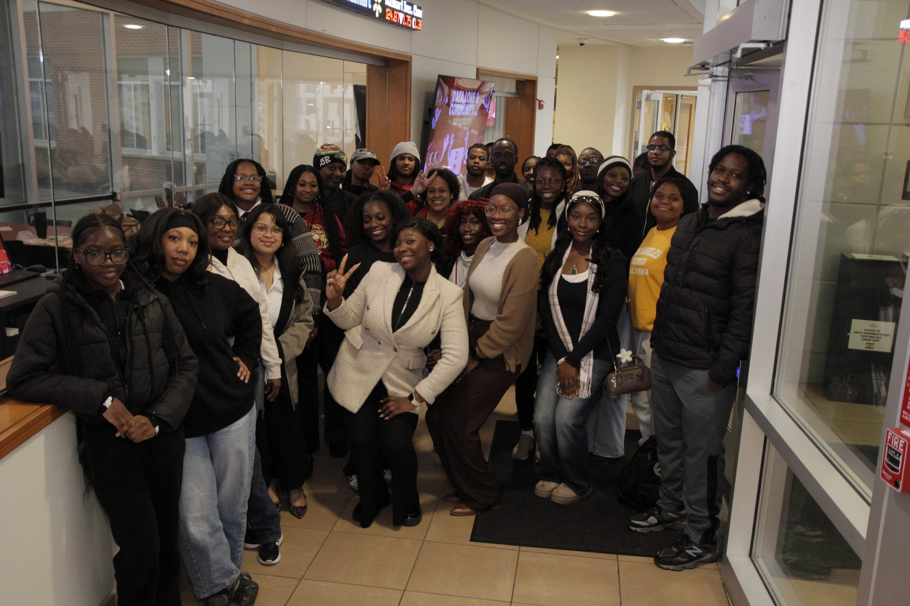
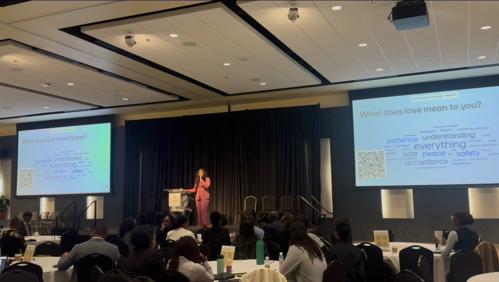

Sincerely, Love
A mental health summit and student research cohort hosted by the Center for Data Analytics, exploring how data can help students talk about and act on wellbeing.

Data, love, and community
The summit brought students, mental health advocates, and local leaders into conversation about wellbeing. Attendees included City of Laurel Mayor Keith Sydnor and Forest Heights Mayor Troy Barrington Lilly.
The session I led was a live data activity on how people define, feel, and express love. Each response became part of a shared picture of the room.

The student cohort
I founded the research cohort to give students research roles on student wellbeing, combining survey work, data analysis, and visual reporting. The cohort's work focused on campus mental health and how data can inform support for students.